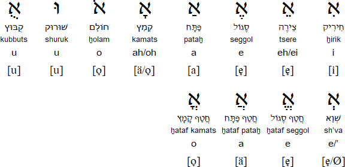

Main points
- Introduction to the Hebrew Alphabet
- The Hebrew Letters
- Hebrew alphabet table
- Vowels and Dots
- Pronunciation
- Listening and speaking practice
Introduction to the Hebrew Alphabet
The Hebrew Alphabet has been used throughout the past two millennia mainly as a script for Biblical Hebrew, modern Hebrew, Jewish Aramaic, Yiddish, and Ladino, and also some other Judean-Arabic and Judean-Persian dialects.
Hebrew is an Abjad script, meaning a type of writing system where each symbol or letter stands for a consonant, leaving it to readers to infer or supply an appropriate vowel.
There are various styles or scripts still in use currently, the present and most mainstream "Jewish script" or "square script", is a stylized form of the Aramaic alphabet and was technically known by Jewish sages as Ashurit (lit. "Assyrian script") since its origins were alleged to be from Assyria.
The Hebrew Letters
The Hebrew Alphabet consists of 22 letters, all consonants, it does not have case – there’s no distinction between uppercase and lowercase letters. Hebrew is written from right to left. Five letters have different forms when used at the end of a word.
Aleph is the first letter of the alphabet and Beth is the second. In Hebrew, the alphabet is called Aleph-Bet (אָלֶפְבֵּית) to reflect the first two letters of the alphabet.
Dagesh
In modern Hebrew, the dagesh (lit. emphasis) is an accent placed in the middle of a letter that changes the pronunciation of ב bet, כ kaf, and פ pe into [v], [ch] and [f]. We've added a column for pronunciation without dagesh to the table below, so it's easy to see the difference between the sounds.
Final Letters
In Modern Hebrew, five letters have final forms or sofit (Hebrew: סופית). These are only used at the end of a word. This final form does not affect the way these letters are pronounced.
The letter Shin is pronounced differently depending on where the dot or accent is placed. If the dot is on the upper right side שׁ, we pronounce it [sh] as in shadow. If the dot is on the upper left side of the letter, we pronounce it [s] as in salad.
Gutturals
Hebrew Language like other Semitic languages has guttural sounds, these are pronounced near the back of the throat. There are 5 guttural letters in Hebrew:
- Resh ר - is pronounced as rolled [r] similar to the French word restaurant.
- Ayin ע - pronounced as if you're clearing your throat.
- Chet ח is pronounced as [ch] as in Bach.
- Hey ה - is a very soft [h].
- Aleph א - also called a glottal stop, is type of consonantal sound that is produced by obstructing airflow in the vocal tract, hence Aleph has no sound, it’s like a pause.
Hebrew alphabet table
| Letter Name | Form | Modern Hebrew Pronunciation | Pronunciation without Dagesh | Final form |
|---|---|---|---|---|
| Aleph | א | Silent | - | - |
| Bet | בּ | [b] | [v] | - |
| Vet | ב | [v] | - | - |
| Gimel | ג | [g] | - | - |
| Dalet | ד | [d] | - | - |
| Hey | ה | [h] | - | - |
| Vav | ו | [v] | - | - |
| Zayin | ז | [z] | - | - |
| Chet | ח | Kh | - | - |
| Tet | ט | [t] | - | - |
| Yud | י | [i] | - | - |
| Kaf | כ | [kh] | [ch] as in loch | ך |
| Lamed | ל | [l] | - | - |
| Mem | מ | [m] | - | ם |
| Nun | נ | [n] | - | ן |
| Samekh | ס | [s] | - | - |
| Ayin | ע | Silent | - | - |
| Pe | פ | [p] | [f] | ף |
| Tzadi | צ | [ts] | - | ץ |
| Qof | ק | [K] | - | - |
| Resh | ר | [r] | - | - |
| Shin | שׁ/שׂ | [sh]/[s] | - | - |
| Tav | ת | [t] | - | - |
Gematria
Hebrew letters have numerical values. Like the Roman numerals, letters are added together to equal a given number, and the letters retain their numerical value no matter where they are placed in a sequence, so tav, kaf, and aleph, for example, equal 421.
This system is called Gematria in Judaism. In modern Israel, western numerals are used as a rule, whereas Hebrew letters are used for days of the week or dates in the Hebrew calendar.
Vowels and Dots
Hebrew language has a system of dots and diacritics that helps readers determine where vowels are and how to pronounce words - this is called Niqqud. This was developed historically by the Masoretes (Jewish scribes and scholars) between the 5th and the 10th centuries.
This was initially meant to standardize pronunciation, paragraph, verse division and cantillation or chanting of the Hebrew Bible (the Tanakh). In writing, these are only used to teach children or beginners Hebrew, in religious texts such as prayer books or the Hebrew Bible and in borrowed words.
Mater Lectionis (from Latin "mothers of reading")
There are 4 weak consonants that act as vowels in Hebrew, these are Aleph, Hey, Vav and Yud. They are used in combination with diacritics or vowels - usually Aleph and Ayin are mute and only indicate that the letter should be pronounced as a vowel.

Pronunciation
There are a lot of differences in pronunciation in modern Hebrew among native and non-native speakers. For example, Ashkenazi Jews, Jewish people who have European ancestry, don't pronounce most of the guttural letters. Jewish people that are originally from Arabic speaking countries - mainly Sephardi and Mizrahi Jews - are able to pronounce the guttural letters more accurately.
When learning Hebrew, it's best not to focus too much on pronunciation of guttural letters or other types of letters since non-natives usually cannot correctly pronounce these more specific sounds. Unless you speak a Semitic language or a language that has similar sounds, our advice is to not trouble yourself too much with the exact pronunciation and just enjoy the learning process!
Listening and speaking practice
When learning a new language, the best thing is to listen and try to repeat the letters and words as you learn them. So, a Hebrew lesson wouldn't be complete without pronunciation practice. See the links below to practice the Hebrew letters and vowels. We encourage you to say the letters out loud and practice them yourself!
Don't be discouraged if you don't get it right initially, there are many letters in Hebrew that can be difficult for non-native speakers to pronounce, the goal for now is to enjoy the learning process!